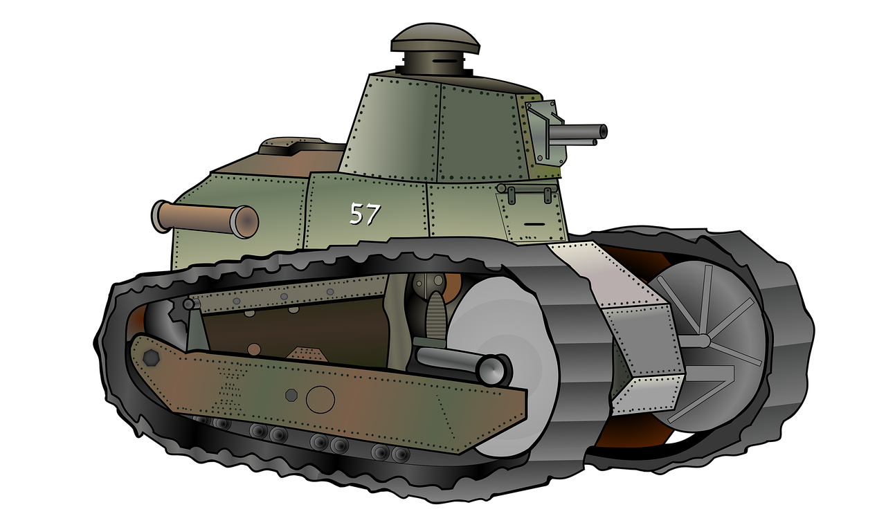

L'avènement du char moderne
Le nouveau char de Louis Renault et du colonel Estienne, le Renault FT fait ses débuts sur le champ de bataille de l'Aisne le le 31 mai 1918. Son efficatité est telle que le véhicule est ensuite déployé en plus grande formations sur les différents champs de bataille. Sa petite taile, couplée à son armement en tourelle rotative ainsi que son moteur situé à l'arrière et sa bonne mobilité comparé aux mastodontes obselètes fabriqué plus tôt dans la guerre en font une arme de percée impressionnante, lui valant le surnom de "Char de la Victoire". Cet engin marque un tournant dans l'industrie militaire et deviendra plus tard le modèle du char de combat moderne.

Evènements Futurs
Naissance d'un char à la double nationnalité
L'Allemagne et la France ont entamés des négociations afin d'arriver à un accord qui pourrait permettre de lancer la création d'un nouveau système de combat terrestre qui remplacerait les chars Léopard 2 allemands et les Leclercs français, devenant viellissants, le MGCS. Si l'accord aboutit, les deux pays bénéficieraient en 2040 d'un char commun utilsant les points forts des deux nations en terme de conception militaire. (image fournie non représentative du véhicule).

Ceci est un paragraphe. Si le code est correct ce texte doit s'afficher au centre.